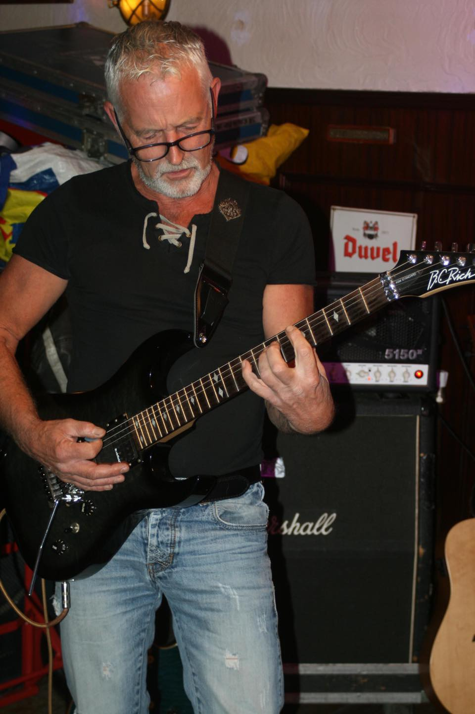
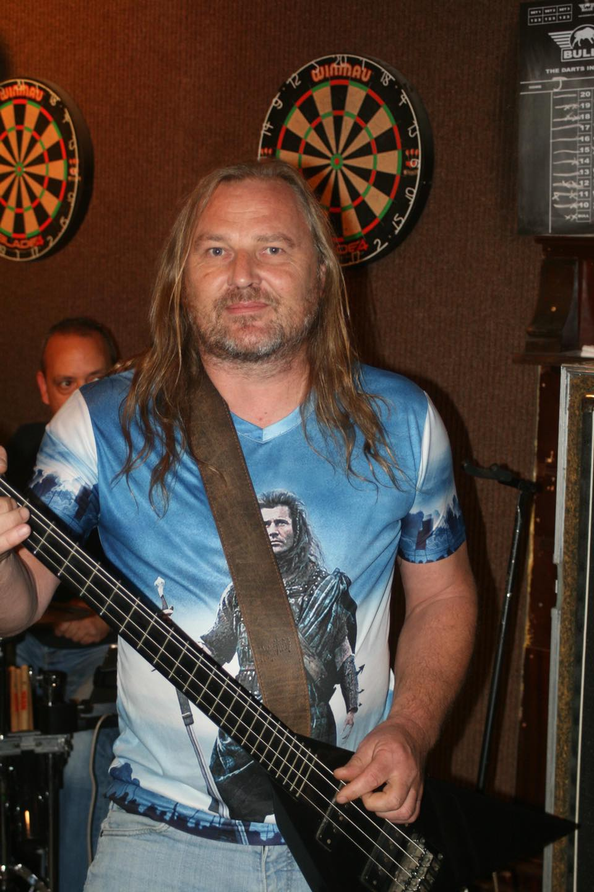
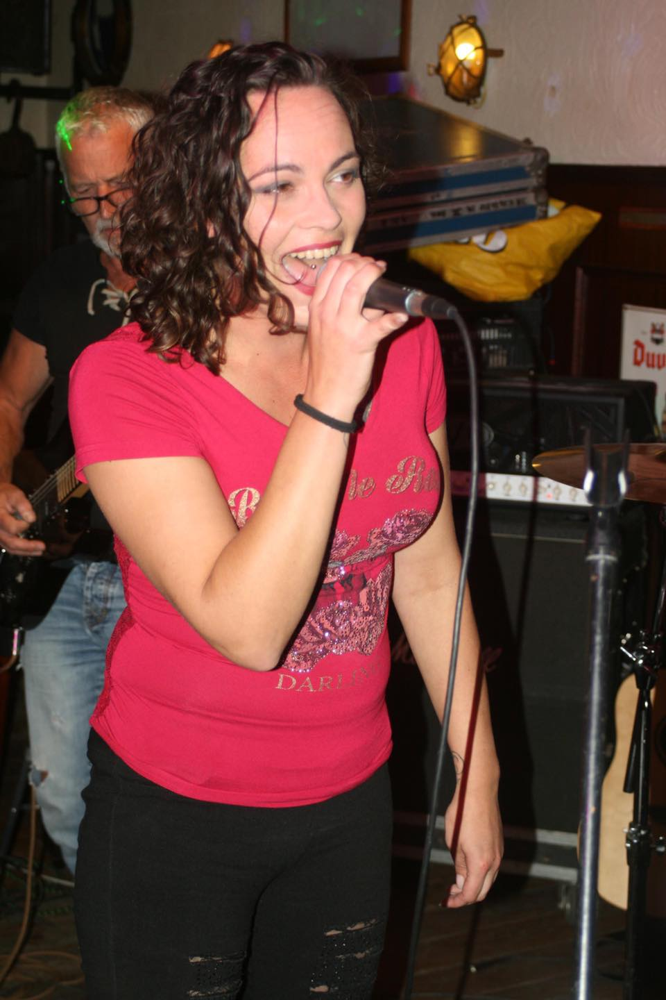
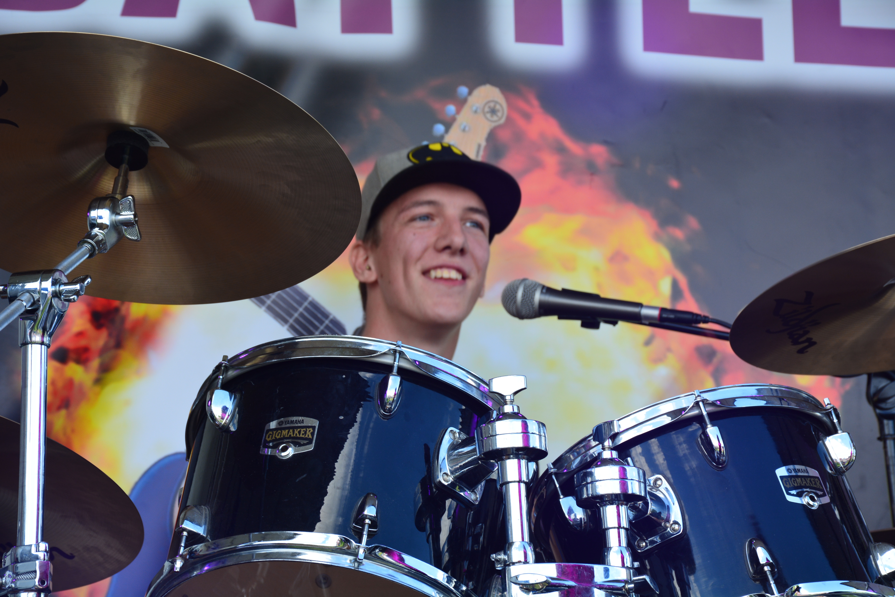

Frans
Zijn liefde voor de gitaar is begonnen na het horen van 'Running with the devil' van van Halen.
Sindsdien speelt hij stevige Rock, en na diverse bands te hebben versleten heeft hij nu zijn draai gevonden met de huidige band.

Marcel
Marcel bespeelt al jarenlang de basgitaar.
Klassiek geschoold, maar zijn passie ligt toch echt bij Rockmuziek!

Jessica
Muziek is haar uitlaatklep.Haar ziel en zaligheid liggen in de muziek die Whatever ten gehore brengt.
Ondanks haar brede smaak voor muziek, ligt haar hart bij Rock.
Van jongs af aan zingen op verjaardagen tot de meidenband van school.Na een korte carriere als zingende barkeepster heeft zij zich ontpopt tot volwaardig frontvrouw!
Met Whatever bouwt zij graag een feestje op uw podium!

Justin
ooit als kleine jongen begonnen met een djembe, maar al snel werd dit een drumstel. Tot groot plezier van de buurt vond hij een band, dus kon hij nog meer oefenen.De focus kwam snel op Rock, wat de nodige rondvliegende drumstokken als gevolg had. Verschillende stijlen zijn geen enkel punt, maar zijn grootste plezier is rocken met Whatever!
Whatever bestaat inmiddels al een aardige tijd. Tijdens het bedenken van de bandnaam, bespraken de leden wat ze graag wilden gaan spelen.
Iemand riep "We gaan toch gewoon rocken, dus Whatever!"
..en dit is blijven hangen. Stuk voor stuk muzikanten met ervaring, 'feeling', en heel belangrijk: een grote liefde voor rockmuziek!
Ondanks wat omzwervingen van de diverse bandleden, komen ze altijd weer bij elkaar terecht. De klik die ze hebben is voel- en hoorbaar op het podium.
Met humor ( en af en toe vliegende drumstokken!) zorgen zij voor een knallend optreden.
Van ACDC tot van Halen, van Lady Gaga tot Muse...
Whatever.. als 't maar Rock is!
*Op dit moment zijn wij klaar om de podia te bestormen en een avondvullend programma vol
gevarieerde rockmuziek aan het publiek voor te schotelen!